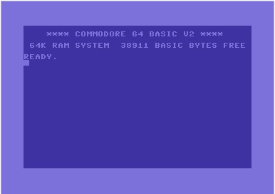

A little bit about Aaron Popp
This page will serve to tell you a bit about me, while at the same time
helping me to learn HTML. Pretty cool, right?
I've broken it down into three sections, just click on one to jump there.
I was born in St. Louis, MO in 1976. I grew up in Hazelwood, MO in
north county and attended McNair elementary. It was here that I was first
exposed to coding - I learned some BASIC on a Commodore 64!

I attended Hazelwood West High School, and after graduation I attended
Truman State University in Kirksville, MO. I started college as a
Physics major & a Spanish minor, but Physics didn't work out very
well for me, so I switched my major and graduated with a degree in Spanish.
After college, I started a rock band with my good friends and we decided that
we were going to be professional musicians. I got an administrative assistant job
at a medical publishing company so I could work 9 to 5 and have weekends off to play shows.
Becoming a financially-viable professional musician (i.e. actually making enough
money to live on) proved to be more difficult than we thought it would,
but we gave it a try for 7 years or so. We disbanded in 2006, but I
continued to play in cover bands until 2014.
Remember that 9 to 5 job I mentioned earlier? Well, I ended up working there
for 15 years - the job didn't satisfy me creatively, but it was a steady paycheck
and I liked the people I worked with. So I stayed. However, in late 2015, my
company restructured my department and eliminated my position. I was out of a job.
After wandering and wavering for a while about my future, I decided to apply to
LaunchCode. And I made it in! So here I am, learning to code and preparing for the next
chapter of my life.